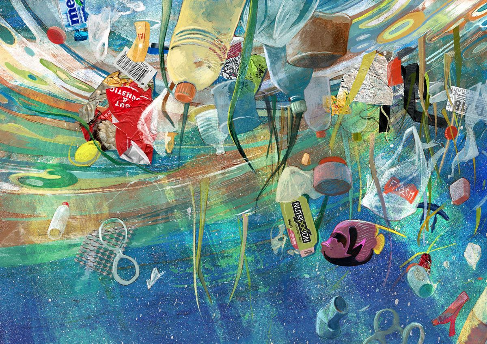
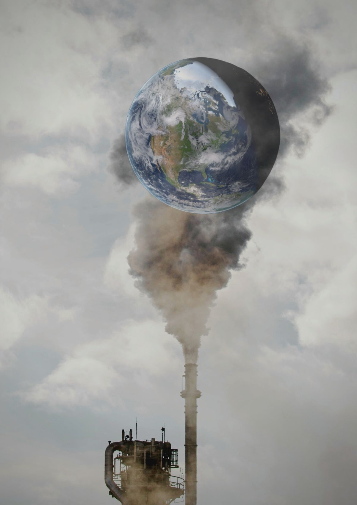
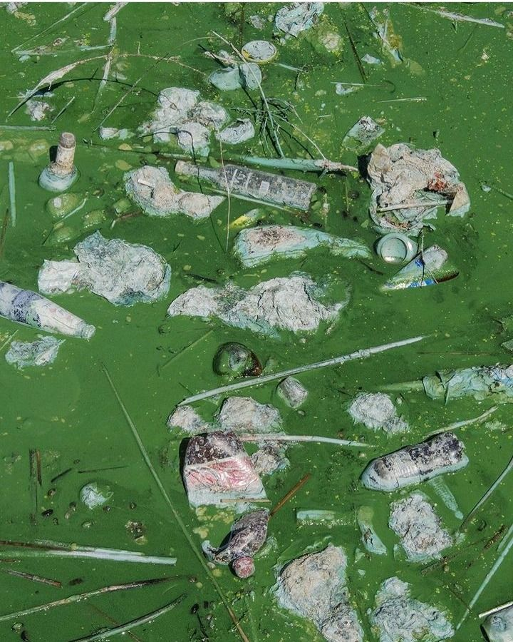
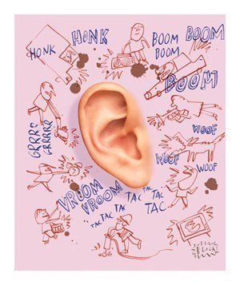

♡ My Website ♡
Pencemaran lingkungan adalah kondisi ketika lingkungan mengalami perubahan akibat masuknya zat, energi, atau bahan lain yang dapat mengganggu keseimbangan lingkungan. Pencemaran dapat terjadi karena kegiatan manusia maupun proses alam, tetapi sebagian besar pencemaran yang terjadi saat ini berkaitan dengan aktivitas manusia. Contohnya adalah asap kendaraan, pembuangan sampah sembarangan, limbah pabrik, penggunaan bahan kimia secara berlebihan, dan pembakaran sampah. Pencemaran dapat mengganggu kehidupan manusia, hewan, tumbuhan, serta organisme lainnya.
Lingkungan yang tercemar dapat menyebabkan berbagai masalah. Udara yang tercemar dapat mengganggu sistem pernapasan manusia dan mengurangi kualitas udara. Air yang tercemar oleh sampah dan limbah dapat membahayakan makhluk hidup yang bergantung pada air tersebut. Sementara itu, pencemaran tanah dapat membuat tanah menjadi kurang subur dan mengganggu pertumbuhan tanaman. Pencemaran suara juga dapat mengganggu kenyamanan dan kesehatan manusia jika terjadi secara terus-menerus.

Terjadi ketika sampah, limbah, atau bahan kimia masuk ke sungai, danau, atau laut.

Disebabkan oleh asap kendaraan, asap pabrik, pembakaran sampah, dan gas berbahaya.

Terjadi karena sampah, pestisida, limbah, dan bahan kimia yang mencemari tanah.

Berasal dari kendaraan, mesin, pembangunan, atau suara keras yang mengganggu.
Pencemaran lingkungan dapat dibagi menjadi beberapa jenis, yaitu pencemaran udara, air, tanah, dan suara. Pencemaran udara biasanya disebabkan oleh asap kendaraan bermotor, asap pabrik, pembakaran sampah, dan berbagai kegiatan yang menghasilkan gas atau partikel berbahaya. Pencemaran air dapat terjadi karena sampah, limbah rumah tangga, limbah industri, serta bahan kimia yang masuk ke sungai, danau, atau laut. Pencemaran tanah dapat disebabkan oleh sampah plastik, limbah rumah tangga, pestisida, dan bahan kimia lainnya.
Selain itu, terdapat pencemaran suara yang berasal dari kendaraan, mesin, pembangunan, atau suara keras lainnya. Meskipun tidak terlihat seperti sampah atau asap, suara yang terlalu keras dapat mengganggu aktivitas dan kenyamanan manusia. Semua jenis pencemaran tersebut perlu diperhatikan karena dapat memberikan dampak terhadap lingkungan apabila terjadi dalam jumlah besar dan dalam waktu yang lama.
Pencemaran lingkungan dapat memberikan dampak yang cukup besar bagi kehidupan. Salah satu dampaknya adalah menurunnya kualitas kesehatan manusia. Udara yang buruk dapat menyebabkan gangguan pernapasan, sedangkan air yang tercemar dapat membawa berbagai penyakit. Pencemaran juga dapat menyebabkan hewan kehilangan habitat dan sumber makanan. Sampah yang berada di laut, misalnya, dapat membahayakan hewan laut yang mengira sampah sebagai makanan.
Pencemaran juga dapat merusak keindahan lingkungan. Lingkungan yang dipenuhi sampah akan terlihat kotor dan tidak nyaman. Jika pencemaran terus terjadi tanpa adanya penanganan, keseimbangan ekosistem dapat terganggu. Oleh karena itu, menjaga kebersihan lingkungan bukan hanya membuat tempat tinggal menjadi lebih nyaman, tetapi juga membantu melindungi manusia dan makhluk hidup lainnya.
Ada banyak hal sederhana yang dapat dilakukan untuk mengurangi pencemaran lingkungan. Kita dapat membuang sampah pada tempatnya, mengurangi penggunaan plastik sekali pakai, membawa botol minum sendiri, dan menggunakan kembali barang yang masih dapat dipakai. Sampah juga dapat dipisahkan berdasarkan jenisnya agar lebih mudah didaur ulang. Selain itu, kita dapat menghemat listrik dan air serta menggunakan transportasi umum, berjalan kaki, atau bersepeda jika memungkinkan.
Menjaga lingkungan merupakan tanggung jawab bersama. Tidak hanya pemerintah atau perusahaan yang harus menjaga lingkungan, tetapi setiap orang juga memiliki peran. Kebiasaan kecil yang dilakukan secara konsisten dapat memberikan perubahan yang positif. Dengan menjaga kebersihan, mengurangi sampah, dan menggunakan sumber daya secara bijak, kita dapat membantu menciptakan lingkungan yang lebih sehat, bersih, dan nyaman untuk kehidupan sekarang maupun generasi berikutnya.
Pencemaran lingkungan merupakan masalah yang dapat memengaruhi manusia dan seluruh makhluk hidup. Pencemaran dapat terjadi pada udara, air, tanah, maupun suara. Dampaknya dapat berupa gangguan kesehatan, kerusakan ekosistem, dan menurunnya kualitas lingkungan. Oleh karena itu, kita perlu menjaga lingkungan melalui kebiasaan sederhana seperti membuang sampah pada tempatnya, mengurangi penggunaan plastik, dan melakukan daur ulang. Jika dilakukan bersama-sama, kebiasaan tersebut dapat membantu menciptakan lingkungan yang lebih bersih dan sehat.